Os livros que você lê em uma forma descontraída como em uma roda de amigos, feito pra você ouvir onde mais se lê e ouve Podcast's na pressa do dia a dia é claro no METRO.
No terceiro MetroPodcast vamos discutir a clássica distopia 1984 de George Orwell além de traçar seus paralelos com o mundo contemporâneo.
No segundo metropodcast vamos conversar sobre o micro machismo presente em A Falência de Júlia Lopes de Almeida.
No primeiro Metro podcast vamos começar com um livro distópico e extremamente atual.
Termos de uso & Termos de Privacidade
.png) Home
Epsisódios
Contato
Home
Epsisódios
Contato